Self-organising maps of EEM data
staRsom: self-organising maps for EEMs prepared with staRdom
Matthias Pucher matthias.pucher@ecosight.at
November 5 2026
Source:vignettes/SOM_analysis_of_EEM.Rmd
SOM_analysis_of_EEM.Rmd
Introduction
staRsom is an add-on to staRdom (Pucher et al. 2019). It arranges excitation emission matrices (EEMs) of dissolved organic matter (DOM) on a self-organising map (SOM). You can use it to explore large and heterogeneous data sets, to find groups of samples with similar DOM, to find regions of the EEMs that behave alike and to identify unusual samples (Bieroza et al. 2009; Ejarque-Gonzalez and Butturini 2014). staRsom works with the EEMs you have corrected with staRdom, so please do the corrections first (see the staRdom vignettes).
Aim of this document
This document shows a complete analysis of EEM data with a self-organising map, from the corrected EEMs to the interpretation of the map, and how the results can be used in a PARAFAC analysis.
How a self-organising map works
You can think of a self-organising map as a grid of hexagonal cells, called units. Each unit holds a typical EEM, its prototype. During the training, each sample is compared with all prototypes. The most similar prototype and, to a lesser degree, its neighbours are shifted a little towards the sample. After many rounds, similar EEMs end up on the same or on neighbouring units and the prototypes change gradually across the map (Kohonen 2013). The map is a two-dimensional picture of your data set: the position of a sample tells you what kind of EEM it has.
Unlike PARAFAC (Murphy et al. 2013), the map does not assume that the EEMs are sums of independent components. It is therefore a good tool for exploring the data before or besides a PARAFAC analysis. staRsom follows the approach of Ejarque-Gonzalez and Butturini (2014):
- The EEMs are normalised, so the map shows differences in the shape of the EEMs, i.e. in the composition of DOM, rather than in the concentration.
- The prototypes are grouped by a cluster analysis to find groups of samples (Vesanto and Alhoniemi 2000).
- Wavelength pairs that change in the same way across the map are grouped into fluorescence regions.
- The stability of the map is tested by calculating it repeatedly from changed sample sets (Bodt et al. 2002).
Alternatively, you can arrange the loadings of a PARAFAC model on a map (Cuss et al. 2014; Wheeler et al. 2017). The maps are calculated with the R package kohonen (Wehrens and Kruisselbrink 2018).
Overview of analysis steps
The diagram below shows the steps of an analysis with staRsom. After importing and correcting the EEMs with staRdom, the EEMs are prepared and the map is calculated. You should check the training, the quality and the stability of the map and adjust the settings if necessary. Then you can explore the samples on the map, find groups of samples and fluorescence regions and check for outliers. Groups of samples can be analysed separately with PARAFAC in staRdom, and the loadings of a PARAFAC model can be arranged on a map as well.
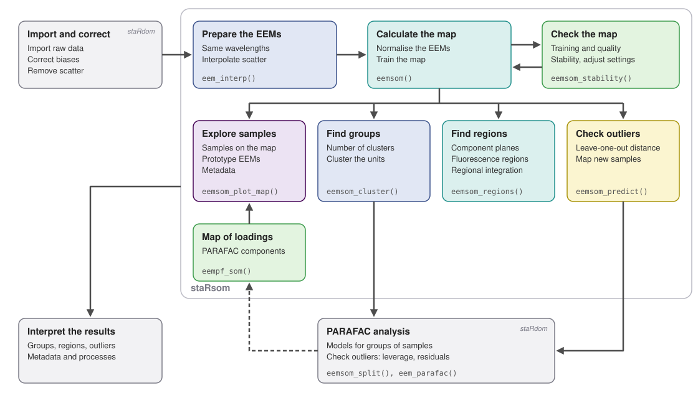
Parallel processing
Some functions can use several CPU cores to speed up the calculations:
-
eem_interp()of staRdom interpolates the EEMs in parallel. -
eemsom()andeempf_som()can train the map in parallel withmode = "pbatch". This parallel batch algorithm gives slightly different maps than the default online training, so please use the samemodeif you want to reproduce your results. -
eemsom_stability()calculates the repeated maps in parallel. Its results are the same regardless of the number of cores.
As in staRdom, we recommend setting cores to the number
of physical cores of your computer:
cores <- parallel::detectCores(logical = FALSE)This vignette uses 2 cores.
Remark on warnings
Some functions show warnings when something unusual happens, e.g. when a group of samples is too small for a PARAFAC model or when the map has more units than samples. Warnings do not stop the calculation. Please think about the reason of a warning; in some cases it is in line with what you want.
Load and prepare the data
Load the drEEM example data
The drEEM tutorial data set (Murphy et al.
2013) contains 206 samples after removing blanks and outliers. It
is not part of staRdom or staRsom because of its size, but you can
download it with eem_load_dreem() (see the staRdom vignette
“PARAFAC analysis of EEM data”). The data is already corrected. Use the
following code to work with the complete data set:
# download the drEEM data set
eem_list <- eem_load_dreem()
# remove blanks and samples that were excluded in the drEEM tutorial
eem_list <- eem_exclude(eem_list, exclude = list(sample = eem_names(eem_list)[grepl("bl|0A", eem_names(eem_list))]))To keep the calculation times of this vignette short, the small subset of 15 samples from staRdom is used below. With so few samples, the map is very coarse and the results should not be interpreted. The code works the same way with the complete data set.
eem_list
#> sample ex_min ex_max em_min em_max is_blank_corrected
#> 1 d0680sfK 230 455 290 682 TRUE
#> 2 d1266sf 230 455 290 682 TRUE
#> 3 d1268sfK 230 455 290 682 TRUE
#> 4 d1543sfK 230 455 290 682 TRUE
#> 5 d1549sfK 230 455 290 682 TRUE
#> 6 d1550sfK 230 455 290 682 TRUE
#> 7 d1557sfK 230 455 290 682 TRUE
#> 8 d1559sfK 230 455 290 682 TRUE
#> 9 d1565sfK 230 455 290 682 TRUE
#> 10 d1567sfK 230 455 290 682 TRUE
#> 11 d1568sfK 230 455 290 682 TRUE
#> 12 d492sf 230 455 290 682 TRUE
#> 13 d661sf 230 455 290 682 TRUE
#> 14 d667sf 230 455 290 682 TRUE
#> 15 dSFB445pwd1t 230 455 290 682 TRUE
#> is_scatter_corrected is_ife_corrected is_raman_normalized
#> 1 FALSE TRUE TRUE
#> 2 FALSE TRUE TRUE
#> 3 FALSE TRUE TRUE
#> 4 FALSE TRUE TRUE
#> 5 FALSE TRUE TRUE
#> 6 FALSE TRUE TRUE
#> 7 FALSE TRUE TRUE
#> 8 FALSE TRUE TRUE
#> 9 FALSE TRUE TRUE
#> 10 FALSE TRUE TRUE
#> 11 FALSE TRUE TRUE
#> 12 FALSE TRUE TRUE
#> 13 FALSE TRUE TRUE
#> 14 FALSE TRUE TRUE
#> 15 FALSE TRUE TRUEPrepare the EEMs
All EEMs need the same excitation and emission wavelengths. We
recommend removing and interpolating scattering as in a PARAFAC
analysis, otherwise Raman and Rayleigh scattering would dominate the
map. Here, the wavelengths are additionally reduced to the range of the
PARAFAC model pf4 from staRdom. These staRdom functions are
useful at this step:
-
eem_range()cuts the EEMs to a range of wavelengths. -
eem_red2smallest()andeem_extend2largest()bring EEMs with different wavelengths to the same wavelengths. -
eem_rem_scat()removes scattering,eem_interp()interpolates the removed areas. -
eem_exclude()removes samples or wavelengths.
eem_list <- eem_list |>
# same wavelength range as the PARAFAC model pf4
eem_range(ex = c(250, 455), em = c(290, 578)) |>
# remove Raman and Rayleigh scattering of 1st and 2nd order
eem_rem_scat(remove_scatter = c(TRUE, TRUE, TRUE, TRUE), remove_scatter_width = c(15, 15, 18, 19)) |>
# interpolate the removed areas
eem_interp(type = 1, extend = FALSE, cores = cores)
ggeem(eem_list)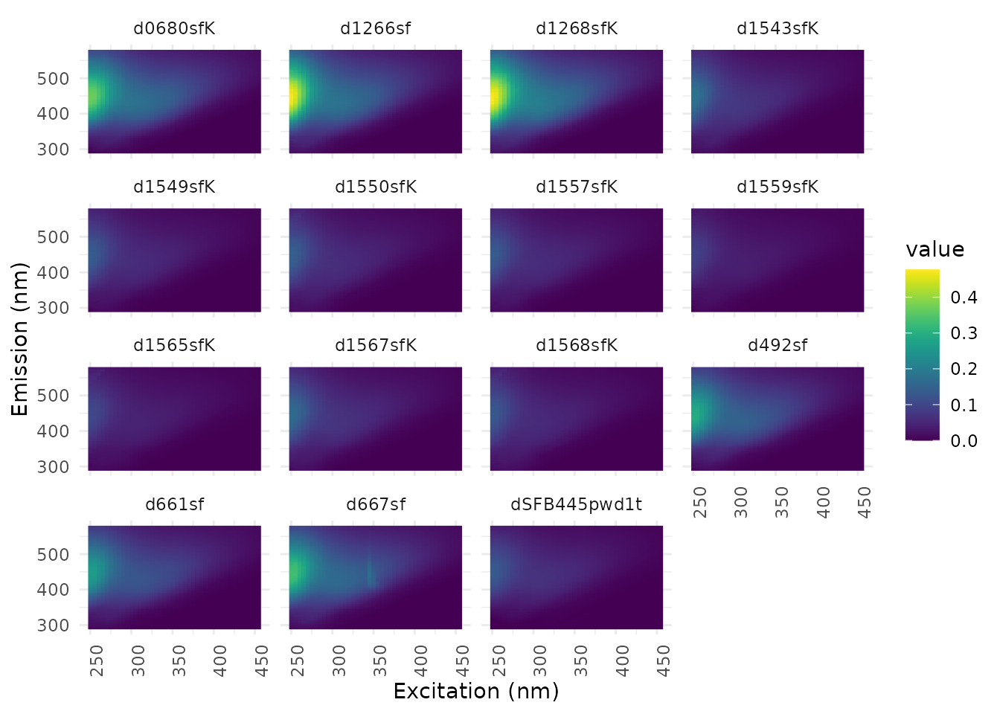
Calculate the map
Train the map
eemsom() normalises the EEMs and trains the map. By
default, each EEM is divided by its standard deviation, like
eem_parafac(normalise = TRUE) does, so the map shows
differences in the composition of DOM. You can use
normalise = "max" to divide by the maximum as
Ejarque-Gonzalez and Butturini (2014) did,
or normalise = "none" if differences in concentration are
of interest. The size of the map is chosen automatically from the number
of samples (Vesanto and Alhoniemi 2000),
but you can set it with dim. Please always set a
seed to get the same map again. Without seed,
the functions use the random numbers of your R session like other R
functions do, so set.seed() before the call works as
well.
# train the map, the seed makes the result reproducible
som <- eemsom(eem_list, seed = 42, verbose = TRUE)
#> A map of 3 x 5 units is calculated from 15 samples and 3066 wavelength pairs.
som
#> Self-organising map of 15 EEMs
#> map: 3 x 5 hexagonal units
#> wavelength pairs: 3066 of 3066
#> normalisation: sd
#> clusters: noneCheck the training and the quality
The training should end with a flat curve. If the curve still
decreases at the end, please increase the number of training rounds
rlen.
eemsom_plot_training(som)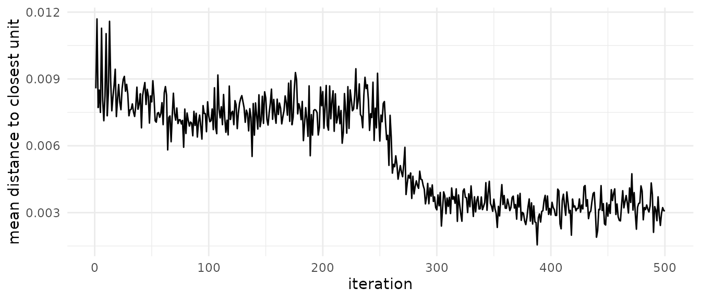
eemsom_quality() describes how well the map represents
your samples:
- The quantisation error is the mean distance between the samples and their prototypes. Lower values mean that the prototypes represent the samples well.
- The topographic error is the share of samples whose two most similar prototypes are not neighbours. High values indicate a folded map, on which similar samples are spread over distant units.
- The explained variance is the share of the differences between the samples that is represented by the prototypes.
eemsom_quality(som)
#> quantisation_error topographic_error explained_variance
#> 1 0.5102973 0 0.9748979Speed up the calculation for large data sets
With the 15 samples used here, every step takes seconds. The training
time grows with the numbers of samples, units and wavelength pairs: the
default online training with rlen = 500 takes about a
minute for 200 EEMs with 3000 wavelength pairs and several minutes for
1000 EEMs on one core. The stability test below repeats the training
nrep times. To reduce the time, you can use the parallel
batch training, fewer training rounds or a lower resolution of the EEMs.
Ejarque-Gonzalez and Butturini (2014) used
366 wavelength pairs.
# parallel batch training with 4 cores and fewer training rounds
som_pbatch <- eemsom(eem_list, mode = "pbatch", cores = 4, rlen = 100, seed = 42)
# lower resolution: remove every second excitation and emission wavelength
eem_list_reduced <- eem_exclude(eem_list, list(ex = eem_list[[1]]$ex[c(FALSE, TRUE)], em = eem_list[[1]]$em[c(FALSE, TRUE)]))Explore the samples on the map
These functions show where the samples are and what the map looks like:
-
eemsom_samples()returns the unit of each sample, its distance to the prototype, the number of samples on the unit (hits) and the U-matrix value of the unit (see below). -
eemsom_plot_map()shows different properties of the units and the samples on the map. -
ggeem()plots the prototype EEMs,eemsom_codes()returns them as an eemlist, e.g. for an export. -
eemsom_plot_cplane()shows the fluorescence of single wavelength pairs on the map.
Locate the samples
eemsom_samples(som)
#> sample unit x y distance hits umatrix cluster
#> 1 d0680sfK 2 2.5 0.8660254 0.771242410 2 2.862827 NA
#> 2 d1266sf 4 1.0 1.7320508 0.028420309 1 5.733483 NA
#> 3 d1268sfK 1 1.5 0.8660254 0.009557136 1 3.580341 NA
#> 4 d1543sfK 13 1.5 4.3301270 0.014728140 1 2.112330 NA
#> 5 d1549sfK 7 1.5 2.5980762 0.005551173 1 3.655032 NA
#> 6 d1550sfK 15 3.5 4.3301270 0.784240716 2 2.192876 NA
#> 7 d1557sfK 11 2.0 3.4641016 0.783183569 2 2.213011 NA
#> 8 d1559sfK 11 2.0 3.4641016 0.948463561 2 2.213011 NA
#> 9 d1565sfK 12 3.0 3.4641016 0.003686166 1 2.601416 NA
#> 10 d1567sfK 10 1.0 3.4641016 0.006334259 1 1.969990 NA
#> 11 d1568sfK 15 3.5 4.3301270 0.803437383 2 2.192876 NA
#> 12 d492sf 6 3.0 1.7320508 1.153566108 2 3.054202 NA
#> 13 d661sf 2 2.5 0.8660254 1.001773220 2 2.862827 NA
#> 14 d667sf 6 3.0 1.7320508 1.325074451 2 3.054202 NA
#> 15 dSFB445pwd1t 3 3.5 0.8660254 0.015201577 1 3.392289 NAThe number of samples per unit shows how the samples are distributed.
unit_labels = TRUE adds the numbers of the units, which are
used in the other functions. The U-matrix shows how different each
prototype is from its neighbours. High values mark borders between
groups of similar units, low values indicate regions of similar units
(Ejarque-Gonzalez and Butturini 2014).
eemsom_plot_map(som, type = "counts", unit_labels = TRUE)
eemsom_plot_map(som, type = "umatrix")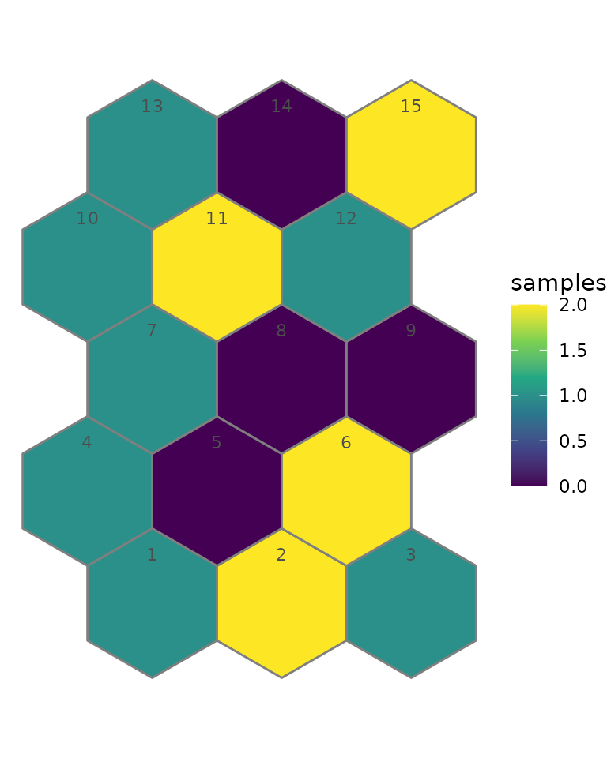
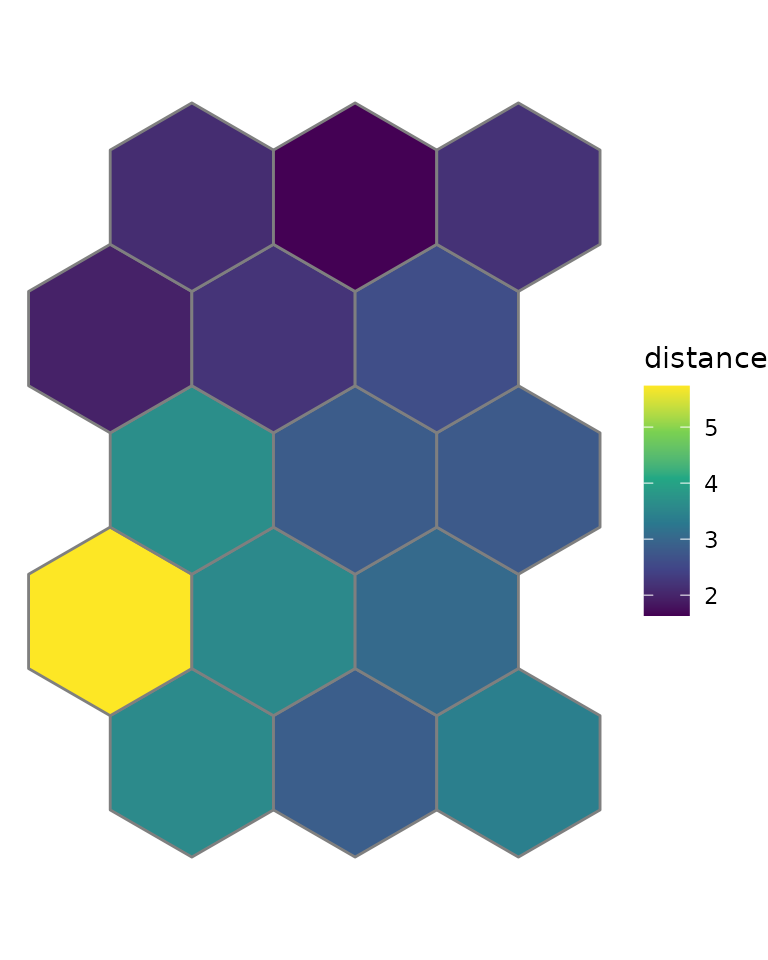
You can colour the samples by metadata, e.g. sampling site, date or discharge. Ejarque-Gonzalez and Butturini (2014) showed in this way that samples taken during floods along the whole river were mapped to a few neighbouring units, i.e. floods made the EEMs more similar. Here, we use the first letters of the sample names as an example.
# one value per sample, in the order of the samples in eem_list
site <- substr(eem_names(eem_list), 1, 3)
eemsom_plot_map(som, type = "samples", colour = site, labels = TRUE)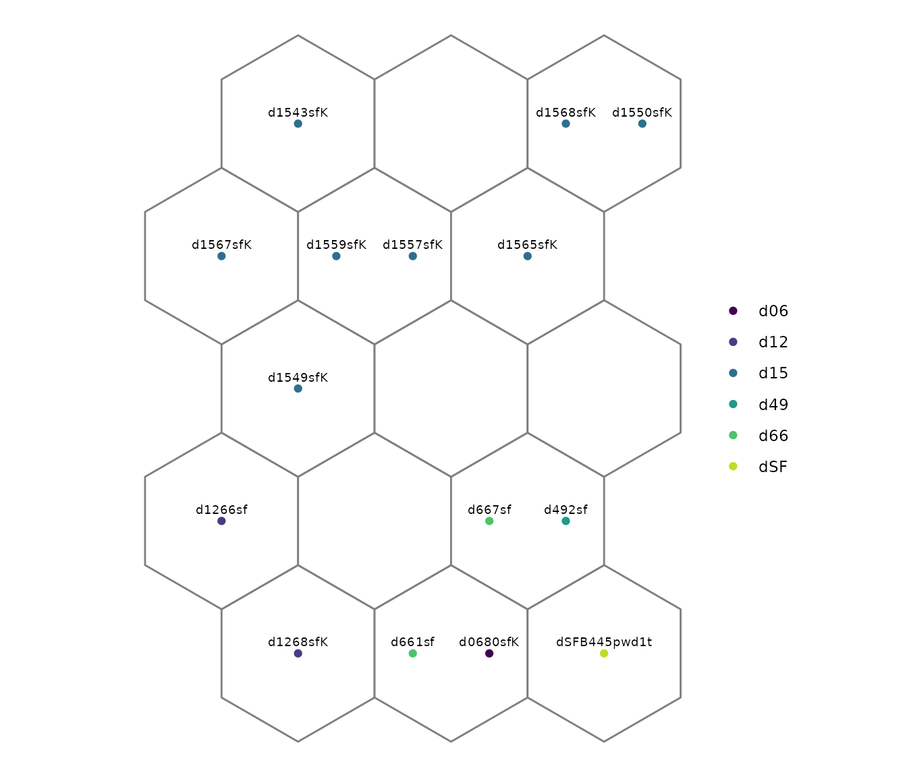
View the prototype EEMs
The prototypes are arranged like the units on the map. The titles show the number of samples on each unit. The prototypes show the typical fluorescence of each part of the map (Ejarque-Gonzalez and Butturini 2014), so you can see how the EEMs change from one side of the map to the other.
ggeem(som)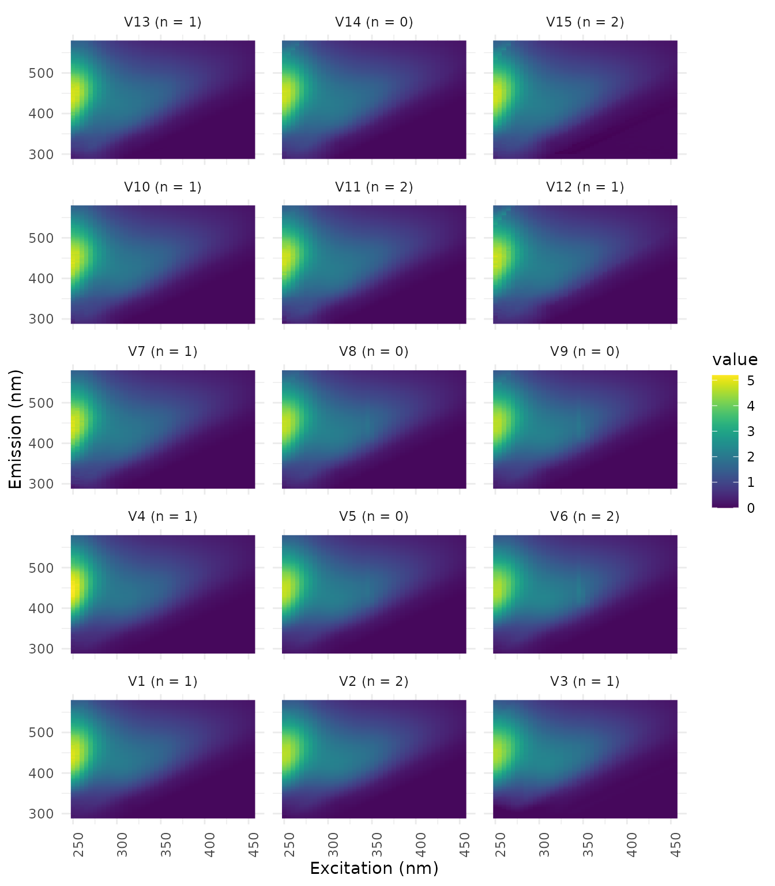
Look at single wavelength pairs
A component plane shows the fluorescence of one wavelength pair in all prototypes. Wavelength pairs with similar component planes change in the same way across your samples, which is the basis of the fluorescence regions below (Ejarque-Gonzalez and Butturini 2014). Here, we look at the peaks B, T, A and C (Coble 1996). With one colour scale for all planes, you can compare the intensities:
# peaks B, T, A and C, the closest available wavelengths are used
eemsom_plot_cplane(som, ex = c(275, 275, 260, 350), em = c(310, 340, 450, 450))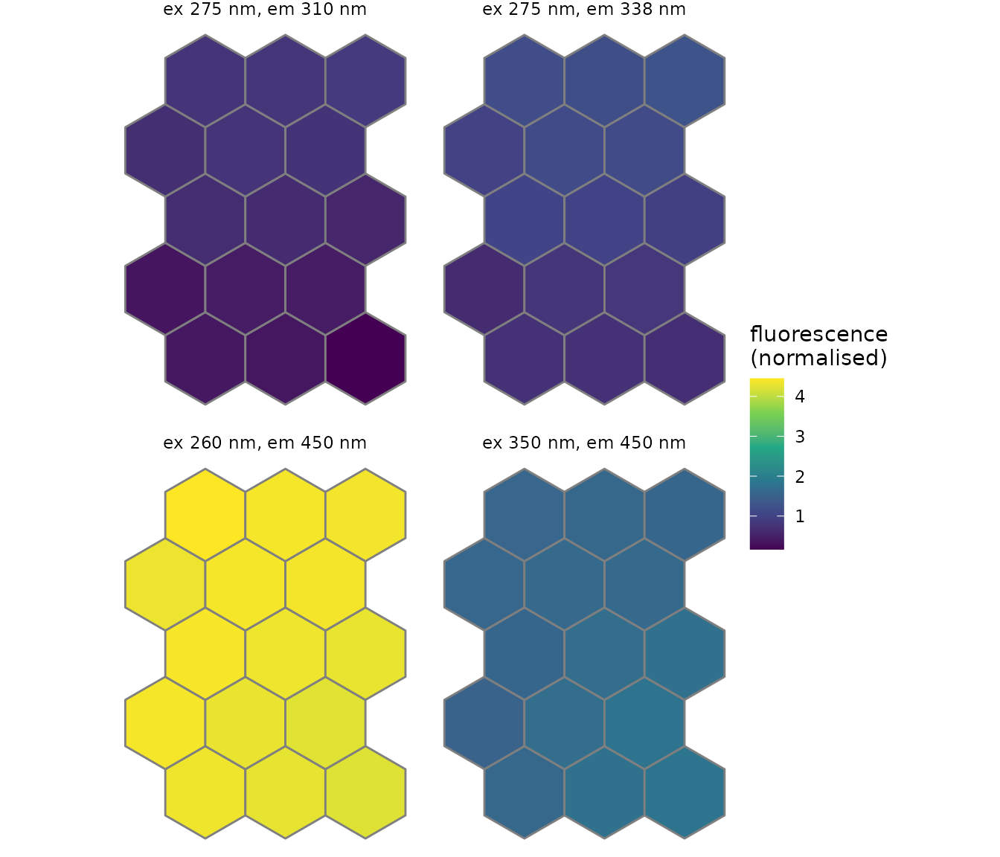
Scaling each plane from 0 to 1 shows the patterns of weak peaks as well:
eemsom_plot_cplane(som, ex = c(275, 275, 260, 350), em = c(310, 340, 450, 450), scale = "each")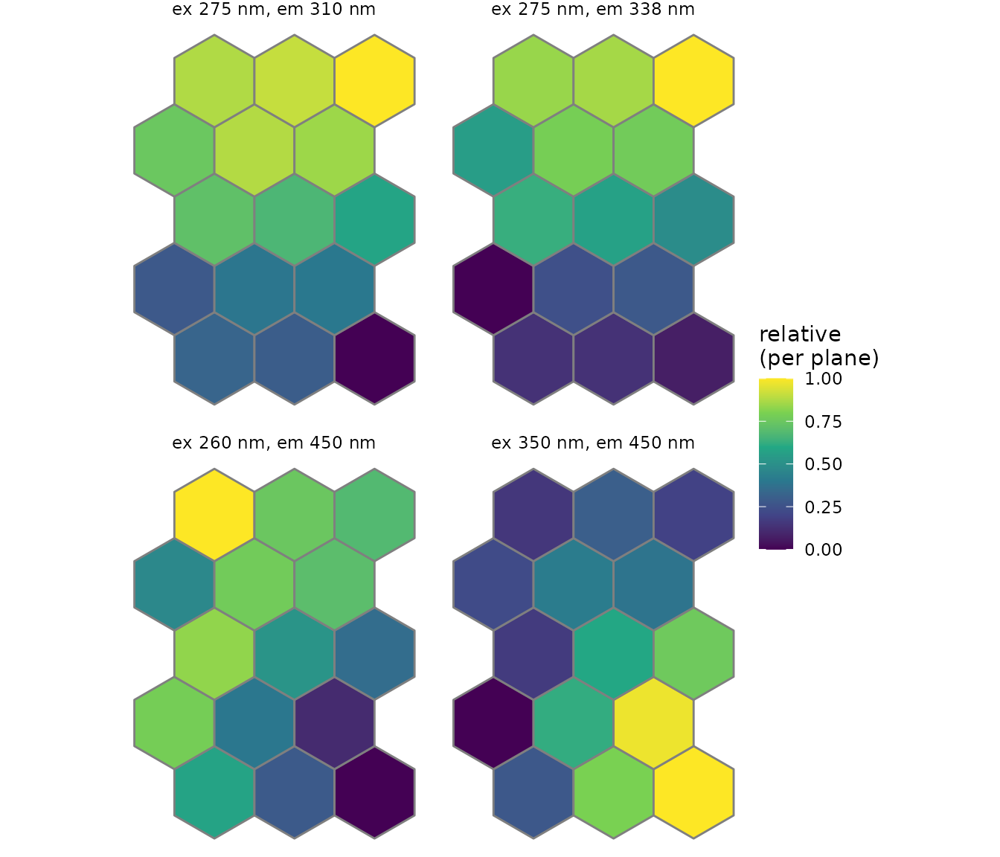
Find groups of samples
The prototypes are grouped by a hierarchical cluster analysis with complete linkage (Ejarque-Gonzalez and Butturini 2014). Each sample belongs to the cluster of its unit. These functions are used:
-
eemsom_kselect()helps you to choose the number of clusters. -
eemsom_cluster()clusters the units. -
eemsom_plot_silhouette()shows how well each unit fits into its cluster. -
eemsom_plot_map(type = "cluster")shows the clusters on the map.
Choose the number of clusters
eemsom_kselect() calculates several criteria for
different numbers of clusters. Good numbers have a high mean silhouette
width (Rousseeuw 1987), few units with
negative silhouette widths (units that would fit better into another
cluster), a low Davies-Bouldin index and are at a bend of the decreasing
within-cluster sum of squares. The criteria do not always agree, so
please also consider what makes sense for your samples.
eemsom_kselect(som, k = 2:8)
#> k silhouette negative davies_bouldin wss
#> 1 2 0.4357773 1 0.7746592 111.83557
#> 2 3 0.4364312 2 0.5583570 67.90585
#> 3 4 0.3566238 0 0.7263544 42.44332
#> 4 5 0.3500087 0 0.5863359 31.36231
#> 5 6 0.2427718 1 0.5788073 25.38621
#> 6 7 0.2316670 2 0.5233509 18.34812
#> 7 8 0.2468078 1 0.6136547 12.34566Cluster the units
The silhouette width shows how well each unit fits into its cluster. Ejarque-Gonzalez and Butturini (2014) chose the number of fluorescence regions by a high mean silhouette width and few negative values.
# three clusters, complete linkage by default
som <- eemsom_cluster(som, k = 3)
eemsom_plot_map(som, type = "cluster")
eemsom_plot_silhouette(som)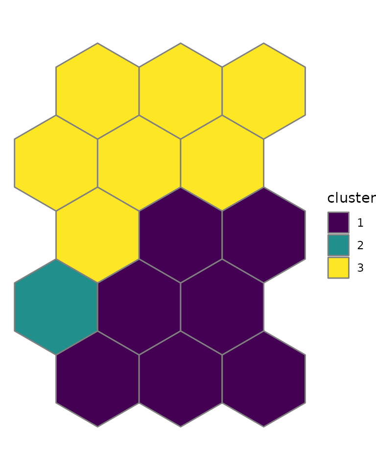
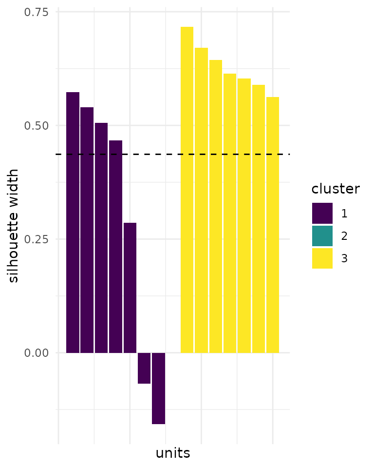
# number of samples per cluster
table(cluster = eemsom_samples(som)$cluster)
#> cluster
#> 1 2 3
#> 6 1 8Find fluorescence regions
Wavelength pairs whose component planes are correlated change in the
same way across your samples. eemsom_regions() groups them
into regions, and each region is assumed to represent a fluorescence
component (Ejarque-Gonzalez and Butturini
2014). By default, the number of regions is chosen from 2 to 9 by
the highest mean silhouette width; you can also set a single number with
k. The default method = "planes" is a fast
alternative to the correlation matrix used by Barreto-Sanz and
Pérez-Uribe (2007)
(method = "cormat"). These functions are used:
-
eemsom_regions()finds the regions. -
ggeem()plots the regions. -
eemsom_fri()integrates the fluorescence of each sample within the regions.
regions <- eemsom_regions(som, seed = 42)
regions
#> Fluorescence regions from a self-organising map
#> regions: 2 (highest mean silhouette)
#> wavelength pairs per region:
#> region
#> 1 2 <NA>
#> 2323 656 87
# criteria for the numbers of regions
regions$kselect
#> k silhouette negative davies_bouldin wss
#> 1 2 0.4917579 4 0.8856574 91.17789
#> 2 3 0.4852490 13 0.7061162 74.97346
#> 3 4 0.3650833 15 1.0171283 55.20362
#> 4 5 0.3234194 23 1.1053236 52.33315
#> 5 6 0.2156770 34 1.3643238 47.98234
#> 6 7 0.2044633 54 1.1305220 43.80484
#> 7 8 0.2038195 55 1.0821254 42.12985
#> 8 9 0.2155809 53 1.0368387 39.59634
ggeem(regions)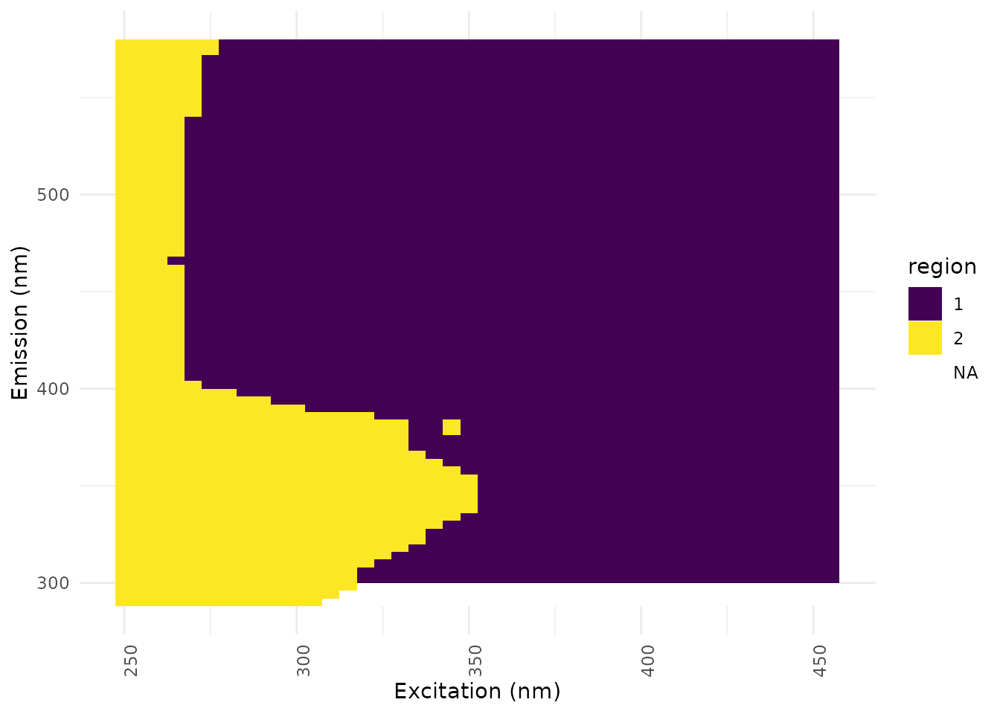
The fluorescence of each sample can be integrated within the regions (Chen et al. 2003). Ejarque-Gonzalez and Butturini (2014) used these area-normalised volumes as new variables to describe their samples. They describe your samples independently of a PARAFAC model.
fri <- eemsom_fri(eem_list, regions)
fri
#> sample region_1 region_2
#> 1 d0680sfK 3938.5736 6963.183
#> 2 d1266sf 3990.8125 8243.682
#> 3 d1268sfK 4515.7783 8813.097
#> 4 d1543sfK 1653.3650 3681.542
#> 5 d1549sfK 1289.5365 2760.938
#> 6 d1550sfK 1339.3196 3031.985
#> 7 d1557sfK 1327.6508 2805.020
#> 8 d1559sfK 892.8317 1890.083
#> 9 d1565sfK 1005.4162 2157.666
#> 10 d1567sfK 1569.4688 3382.323
#> 11 d1568sfK 1242.6781 2837.570
#> 12 d492sf 3163.3834 5731.908
#> 13 d661sf 2809.7332 5099.070
#> 14 d667sf 3585.2609 6487.747
#> 15 dSFB445pwd1t 1493.2018 2509.748Check the stability of the map
Before you interpret the map, please check whether it is stable.
eemsom_stability() calculates the map again from changed
sample sets with the settings of som: from bootstrap
samples, i.e. samples drawn randomly with replacement (Bodt et al. 2002), or from all samples but one
(leave-one-out, type = "loo") (Ejarque-Gonzalez and Butturini 2014). On a
stable map, pairs of samples are almost always or almost never
neighbours, while a random map produces a bell-shaped distribution
(compare Figure 4B in Ejarque-Gonzalez and Butturini (2014)). More repetitions (nrep)
give more reliable results. Each repetition trains a new map, so please
consider the advice on calculation times above.
# 10 maps from bootstrap samples, calculated in parallel
stab <- eemsom_stability(eem_list, som, nrep = 10, seed = 42, cores = cores)
stab
#> Stability of a self-organising map (bootstrap, 10 maps)
#> SS intra: mean 49.65, median 34.24, CV 77.5 %
#> neighbourhood (radius 1): pairs always or never neighbours: 52.4 %
#> expected on a random map: 1.74 %
eemsom_plot_stability(stab)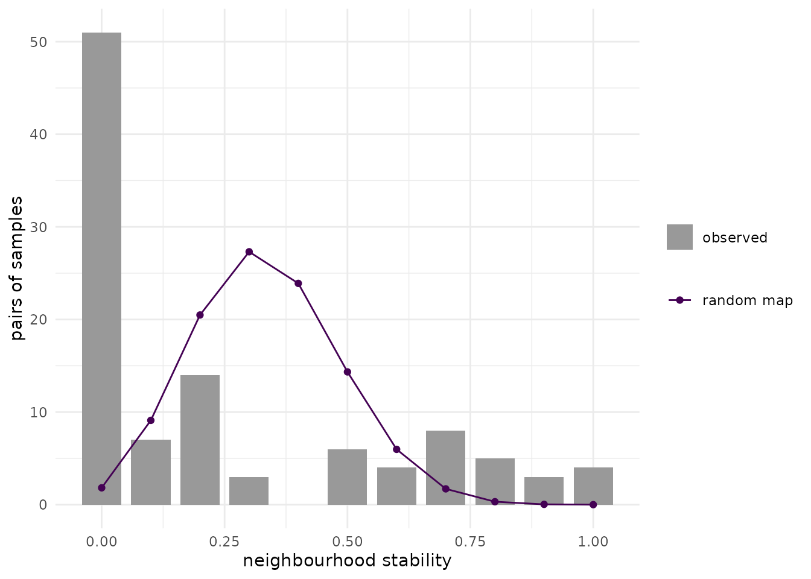
Check for outliers
Keep outliers in the map
In a PARAFAC analysis, outliers are removed, because a few unusual samples can distort all components of the model (Murphy et al. 2013). Self-organising maps are less sensitive: each unit has its own prototype and an unusual sample usually occupies a unit of its own without changing the rest of the map. Ejarque-Gonzalez and Butturini (2014) kept their outliers and found them “naturally integrated” in the map; industrial effluents formed clusters of single units, and leaving them out did not change the map in a meaningful way. Moreover, unusual samples are often an interesting result of an exploratory analysis. Therefore, we recommend keeping outliers in the map. Only samples with errors, e.g. measurement artefacts or remaining scatter, should be removed before.
Find candidates for outliers
The map gives you hints on samples that might be outliers in a subsequent PARAFAC analysis. Here, the two samples excluded by staRdom from the drEEM data are added to the example data:
# the two samples excluded by staRdom, prepared like the example data
data(eem_list_outliers)
eem_list_outliers <- eem_list_outliers |>
eem_rem_scat(remove_scatter = c(TRUE, TRUE, TRUE, TRUE), remove_scatter_width = c(15, 15, 18, 19)) |>
eem_interp(type = 1, extend = FALSE, cores = cores)
# example data and the two outliers together
eem_all <- eem_bind(eem_list, eem_list_outliers)
som_all <- eemsom(eem_all, seed = 42)
smp <- eemsom_samples(som_all)Unusual samples often occupy a unit alone (hits = 1)
that is separated from the neighbouring units by a high U-matrix value.
Their distance to the prototype can be small though, because the
prototype adapts to them. A more reliable indicator is the leave-one-out
distance: each sample is compared with a map calculated without it. This
is similar to the residuals of a sample that is not part of a PARAFAC
model. eemsom_stability() with type = "loo"
calculates these maps and returns the distances in the element
loo.
# one map without each sample
loo <- eemsom_stability(eem_all, som_all, type = "loo", nrep = 1, seed = 42, cores = cores)
loo
#> Stability of a self-organising map (loo, 17 maps)
#> SS intra: mean 29.17, median 21.33, CV 91.4 %
#> neighbourhood (radius 1): pairs always or never neighbours: 62.5 %
#> expected on a random map: 0.101 %
#> leave-one-out distance: median 2.06, highest: dsgb447wt (10.5), dsfb676psp (6.74), d1266sf (4.18)The table compares these indicators with the leverage of the samples
in the PARAFAC model pf2[[4]] from staRdom, which contains
all drEEM samples including the two outliers.
outliers <- data.frame(smp[, c("sample", "hits", "umatrix", "distance")],
loo = loo$loo$distance,
leverage = unname(eempf_leverage(pf2[[4]])$A[smp$sample]))
# samples with the highest leave-one-out distances first
outliers[order(-outliers$loo), ]
#> sample hits umatrix distance loo leverage
#> 17 dsgb447wt 1 8.934185 5.256213e-05 10.546329 0.255833824
#> 16 dsfb676psp 1 6.677372 3.145646e-02 6.737005 0.492049700
#> 2 d1266sf 1 5.950210 3.577513e-02 4.178690 0.054794259
#> 15 dSFB445pwd1t 2 3.383682 1.589975e+00 3.296709 0.027049407
#> 14 d667sf 2 3.084430 1.292229e+00 2.627484 0.008442645
#> 1 d0680sfK 2 3.383682 1.387496e+00 2.273111 0.022720516
#> 8 d1559sfK 3 3.193206 9.942251e-01 2.175092 0.044673236
#> 12 d492sf 2 3.084430 1.186411e+00 2.100840 0.021094503
#> 11 d1568sfK 2 3.407745 7.346634e-01 2.061624 0.035026290
#> 3 d1268sfK 1 4.810965 8.149586e-03 2.031744 0.012316334
#> 9 d1565sfK 3 3.193206 1.449191e+00 2.006733 0.024740826
#> 4 d1543sfK 1 2.270074 1.329147e-02 1.800444 0.020185157
#> 7 d1557sfK 3 3.193206 1.063233e+00 1.635923 0.034074904
#> 5 d1549sfK 2 3.759363 8.068933e-01 1.563331 0.015881803
#> 10 d1567sfK 2 3.759363 7.657490e-01 1.512970 0.017397401
#> 6 d1550sfK 2 3.407745 8.530147e-01 1.440138 0.030277456
#> 13 d661sf 1 3.594859 6.307489e-03 1.290998 0.009985019
eemsom_plot_map(som_all, type = "samples", colour = loo$loo$distance, labels = TRUE)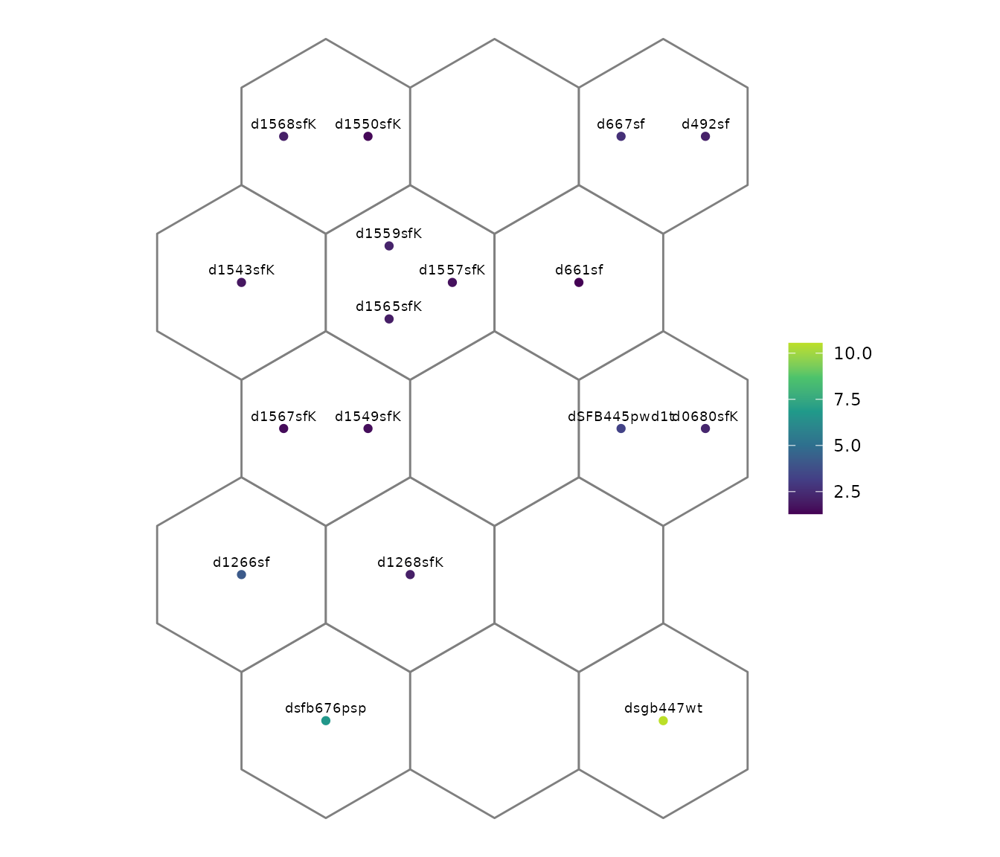
The samples with the highest leave-one-out distances, dsgb447wt and dsfb676psp, are the two outliers. In the complete drEEM data set (208 samples including the two outliers, default settings), both samples occupied units of their own and had the highest leave-one-out distances (9.9 and 7.3, median of all samples 1.0, next sample 3.6) as well as the highest leverages in the PARAFAC model (0.49 and 0.26, next sample 0.08).
Check the candidates in PARAFAC
The indicators of the map point to samples with an unusual shape of their EEMs. They do not replace the outlier analysis of the PARAFAC model:
- The leverage describes the influence of a sample on the PARAFAC model, the residuals describe how well the model represents the sample. The map cannot distinguish between both cases.
- Across all samples of the drEEM data, the indicators of the map were only moderately correlated with leverage and residuals (Spearman’s correlation 0.37 to 0.54). The most extreme samples agreed, but not the order of the others.
- Samples that differ only in concentration are not detected, because
the EEMs are normalised (unless
normalise = "none").
Please check samples with distinctly high leave-one-out distances
with eempf_leverage_plot() and
eempf_residuals_plot() of staRdom before you exclude them.
Groups of single outliers created by eemsom_split() are too
small for a PARAFAC model anyway.
Continue the analysis
Calculate PARAFAC models for groups of samples
You can analyse groups of samples separately with PARAFAC.
eemsom_split() returns one eemlist per cluster. A warning
is shown for groups with less than min_samples samples,
because PARAFAC models need a sufficient number of samples. Please
validate the PARAFAC model of each group as usual (Murphy et al. 2013).
# one eemlist per cluster
eem_groups <- eemsom_split(eem_list, som, min_samples = 5)
#> Warning in eemsom_split(eem_list, som, min_samples = 5): The following groups
#> contain less than 5 samples, PARAFAC models might not be stable: cluster_2
lengths(eem_groups)
#> cluster_1 cluster_2 cluster_3
#> 6 1 8
# one set of PARAFAC models per group
pf_groups <- lapply(eem_groups, eem_parafac, comps = 3:6, normalise = TRUE, nstart = 25, cores = cores)Map new samples
You can map new samples to an existing map, e.g. for monitoring. They need the same wavelengths and the same preparation as the samples of the map. Here, we use the two samples staRdom excluded as outliers from the drEEM data, which were prepared above.
pred <- eemsom_predict(som, eem_list_outliers)
pred
#> sample unit x y distance hits umatrix cluster
#> 1 dsfb676psp 4 1.0 1.7320508 6.742645 1 5.733483 2
#> 2 dsgb447wt 3 3.5 0.8660254 10.542055 1 3.392289 1A high distance compared to the samples of the map indicates that a sample is not well represented by the map. The distances of the two outliers (6.7 and 10.5) are much higher than those of the samples used to calculate the map (maximum 1.3).
Calculate a map of PARAFAC loadings
Instead of the EEMs, you can arrange the loadings of a PARAFAC model
on a map. Cuss et al. (2014) found a
clearer separation of DOM sources with the relative contributions of the
components than with the EEMs. eempf_som() uses the Fmax
values of each component, divided by their sum per sample
(normalise = TRUE). Here, we use the six-component model of
the complete drEEM data set from staRdom.
# map of the relative contributions of the PARAFAC components
pfsom <- eempf_som(pf4[[1]], seed = 42)
pfsom
#> Self-organising map of 206 samples from a PARAFAC model with 6 components
#> map: 5 x 14 hexagonal units
#> loadings: relative (Fmax / sum of Fmax)
#> clusters: none
eemsom_quality(pfsom)
#> quantisation_error topographic_error explained_variance
#> 1 0.006747389 0.1165049 0.9918021The component planes show the relative contribution of each PARAFAC component. Each plane is scaled individually to show the patterns of all components.
eemsom_plot_cplane(pfsom, scale = "each")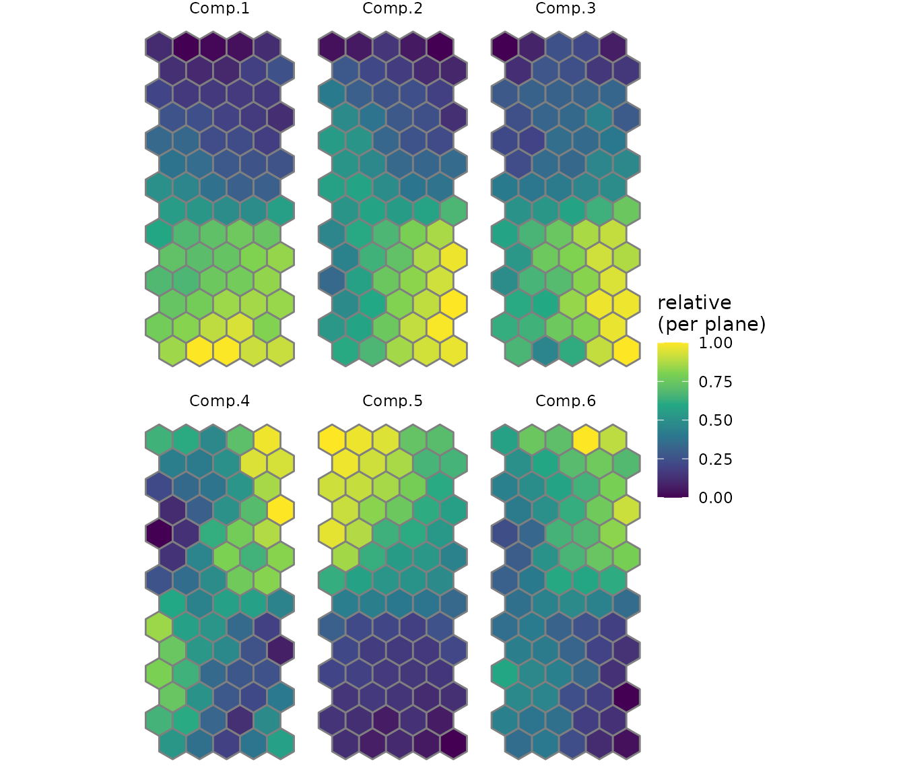
You can use the functions for clustering, splitting and plotting as for maps of EEMs. The prototype EEMs are calculated from the PARAFAC components.
eemsom_kselect(pfsom, k = 2:8)
#> k silhouette negative davies_bouldin wss
#> 1 2 0.5743290 6 0.5543878 0.13164369
#> 2 3 0.4856162 2 0.8028756 0.07916566
#> 3 4 0.4427655 5 0.7551009 0.06861223
#> 4 5 0.4419091 3 0.7561847 0.04820704
#> 5 6 0.3791600 4 0.8160423 0.03599942
#> 6 7 0.3861208 2 0.7934158 0.03122034
#> 7 8 0.3816377 2 0.7732011 0.02650249
pfsom <- eemsom_cluster(pfsom, k = 4)
eemsom_plot_map(pfsom, type = "cluster")
eemsom_plot_map(pfsom, type = "counts")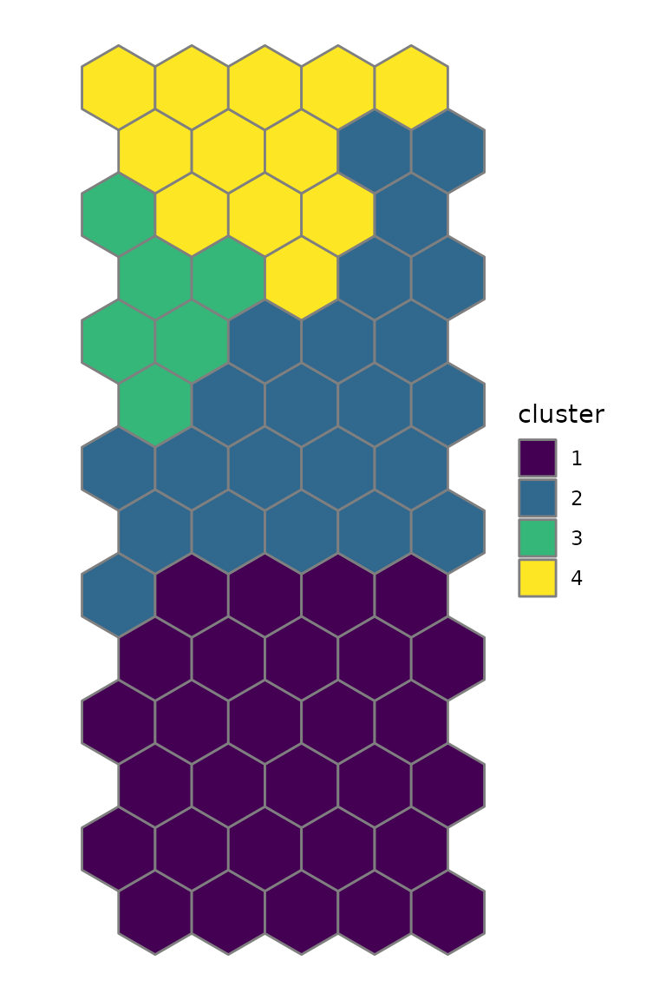
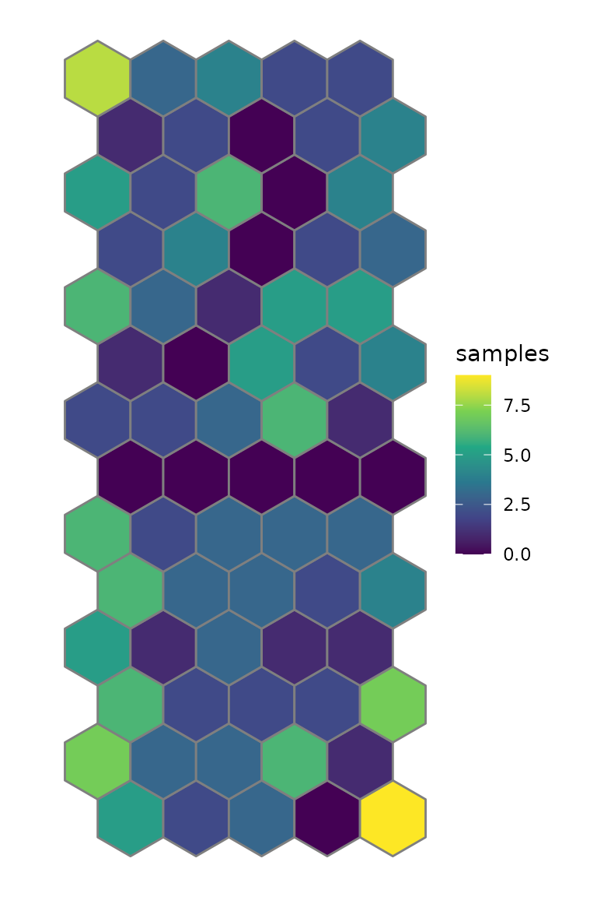
# prototypes of one unit per cluster
units <- which(!duplicated(pfsom$clusters))
ggeem(pfsom, units = units)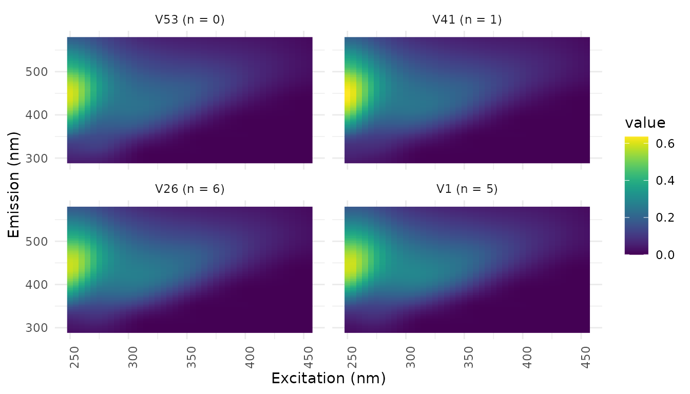
New samples are mapped after their loadings have been calculated with
the emission and excitation loadings of the PARAFAC model
(A_missing() of staRdom). They need the same preparation as
the EEMs of the model. Here, the two outliers prepared above are
used.
eemsom_predict(pfsom, eem_list_outliers)
#> sample unit x y distance hits umatrix cluster
#> 1 dsfb676psp 46 1.0 8.660254 0.05968739 6 0.02195957 3
#> 2 dsgb447wt 25 5.5 4.330127 0.05249007 4 0.01781043 1Interpret the map
These points help you to read the map:
- Position: Samples close to each other on the map have similar EEMs. Distances on the map are only meaningful between neighbouring units; distant units can be similar if the map is folded.
- U-matrix: High values mark borders between groups of similar units. Groups of units with low values contain similar prototypes.
- Counts and empty units: Empty units lie between groups of samples and show transitions between them. Many samples on one unit indicate a homogeneous group.
- Single units with high U-matrix values: Samples with very distinctive EEMs can form clusters of a single unit, e.g. industrial effluents in Ejarque-Gonzalez and Butturini (2014). Such outliers are integrated in the map without distorting it, which you can check with the stability test. High leave-one-out distances confirm them as candidates for outliers in a PARAFAC analysis (see “Check for outliers”).
- Prototypes: The prototype EEMs show the typical fluorescence of each part of the map. You can read the differences between clusters from their prototypes.
- Component planes: Similar component planes indicate fluorescence that changes in the same way. Gradients of peaks along the map explain the arrangement of the samples. The regions summarise these patterns.
- Metadata: Colouring the samples by metadata shows whether groups on the map correspond to sites, seasons, hydrological conditions or other factors.
- Stability: Please draw conclusions only from stable maps. Check the quality measures and the stability before you interpret single units.